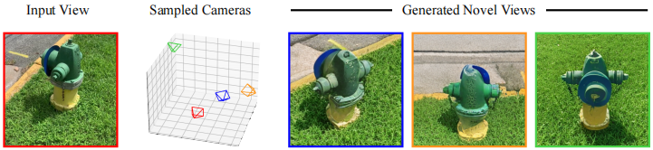
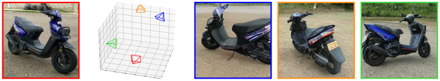
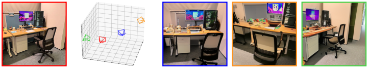
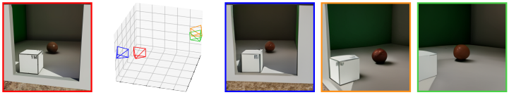
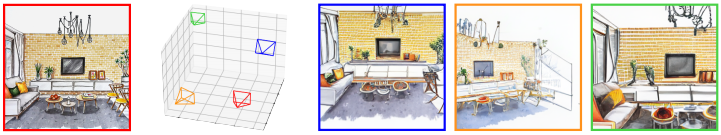
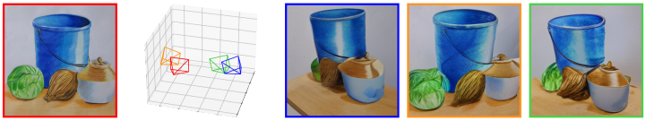
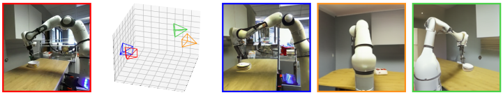

The spatial reasoning ability of humans allows individuals to effortlessly conceive novel views and corresponding viewpoint locations simultaneously within a given scene.
Consequently, based on this finding, exploring the intrinsic connections between these two modalities is a vital step toward advancing spatial intelligence.
How It Works
Novel View Synthesis
For a given observational image,
the GST initially sample multiple appropriate camera poses automatically,
which are then employed as conditions to generate corresponding novel view images.







Relative Pose Estimation
For a pair of images representing the same scene,
the GST can infer relative camera poses effectively and demonstrates strong generalization capabilities,
even when the capture or creation conditions of these two images are markedly disparate.